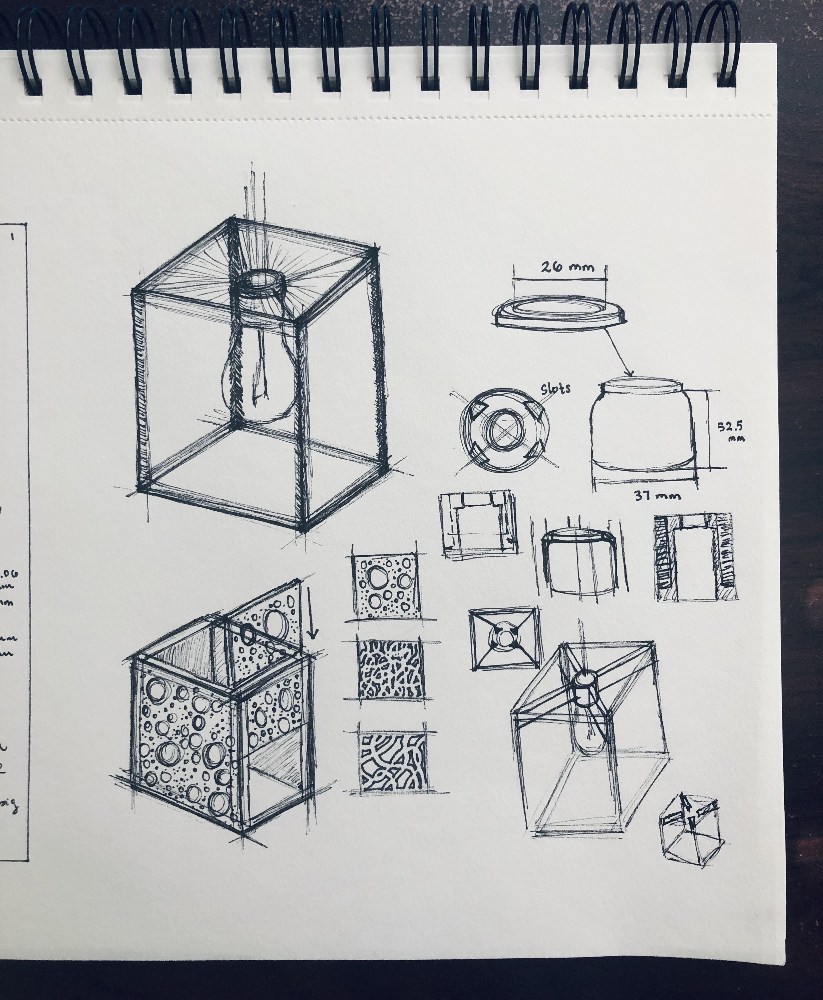
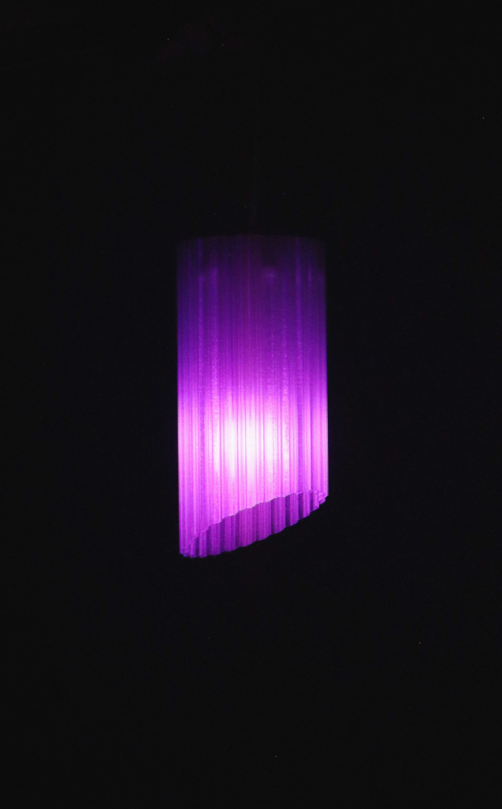
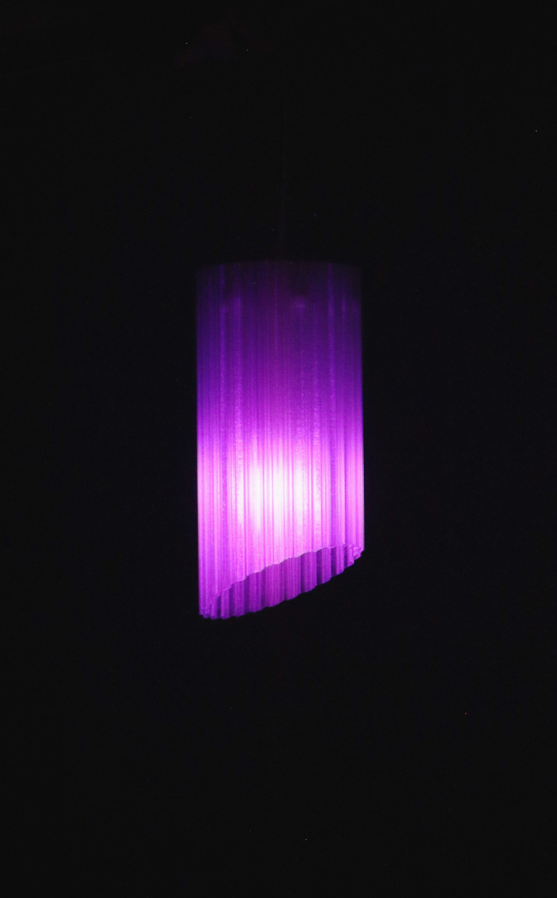
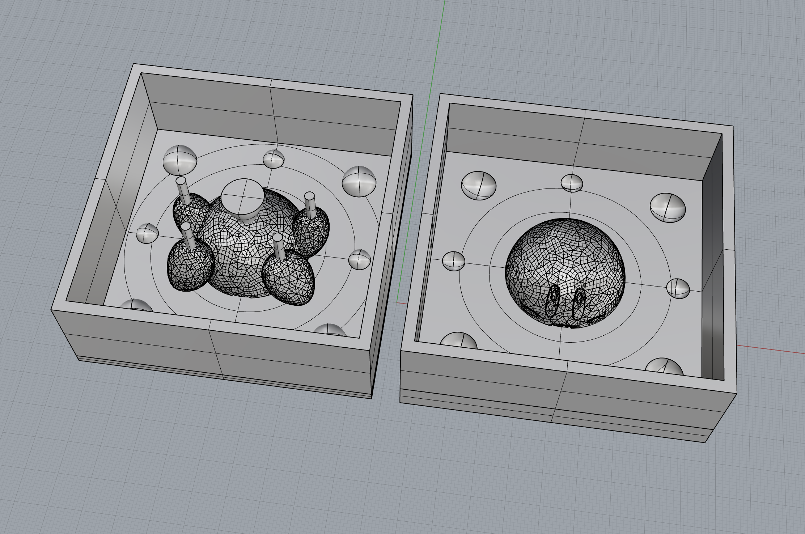
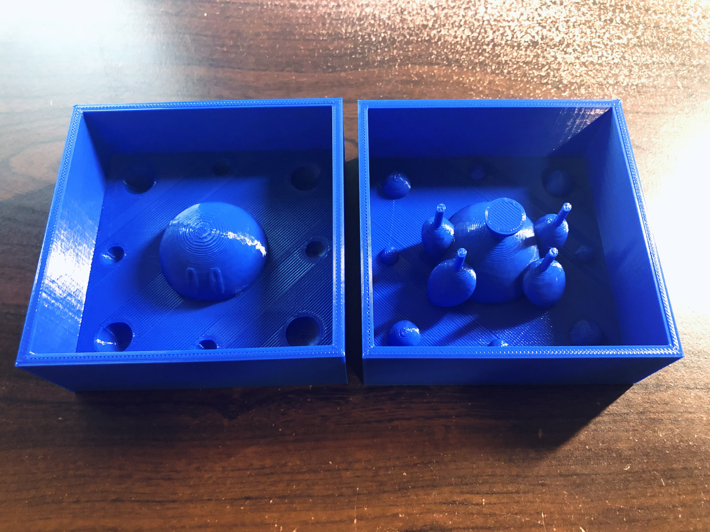

Lamps and Molds
The Goal
Finish the lamp and get started on making molds!
Preparing Materials
Last week, I decided on 3D printing a frame for my lamp that would hold 4 mirror film lined polycarbonate sheets. After getting my materials, I had to prepare them for assembly. I cut the polycarbonate sheets to size and then lined all sheets with mirror film.
Modeling the Lamp
After the sheets were prepped, I used a ruler and my caliper to get the exact dimensions of the sheets which would help me define the size of the slots in the 3D-printed frame. I began modeling the frame in Rhino, starting with the slots that would hold the sheets. Before proceeding with the rest of the model, I wanted to make sure that all the sheets would fit into the slot when printed. Therefore, I printed a section of the slot to test if all 4 sheets could slide in.

All 4 sheets fit into the slot! The slot could be slightly smaller so I made this adjustment in Rhino. I then worked on modeling the remaining structure of the lamp's frame!
Once I got to this point in my modeling, I wanted to put it into Cura to see how long the print would take. I still haven't added the internal pieces that would attach the frame to the light.
Once I put the frame into Cura, I was a bit shocked that it would take around 3 days to print (this isn't even the full model yet!!). I realized that I totally forgot about factoring in the time needed to print supports for the top section of the frame. Since I didn't want to spend 3 days printing the frame, I decided I needed to go with something simpler because of time.
Designing a New Lamp
For my second lamp idea, I wanted to do something smaller and that had a pattern on the outer edge. I sketched out a few ideas and then decided to go with a one-part shade that I could place over the light. I recently got some transparent PLA that I wanted to try, so this design worked out well.
Modeling the New Lamp
To model the new lamp, I began by drawing the outer edge pattern and then used polar array to repeat that for the full 360 degrees. After offsetting and extruding the lamp, I placed it into Cura where I found some edge errors with the model that would greatly impact the print. I had to go back into Rhino and do some troubleshooting. Junchao was able to help me identify where the issue was and taught me how to avoid the same issue in the future. With Junchao's help I was able to finish the modeling of the lamp on my own, add the internal components that would attach the shade to the light, slice it in Cura, and send it to the printer! Better than my first lamp idea, this model would only take 31 hours to print (it actually ended up being 29 hours! yay!)!
In the first hour of printing, I wanted to put what Junchao taught me into practice, so I worked on modeling a third lamp idea! Modeling the third idea was so much faster, and I didn't run into any major issues that I couldn't figure out on my own! I'm excited to print this other shade later.
Printing the New Lamp
The lamp shade printed in 29 hours!
After printing the lampshade, I placed it over the light! I'm very happy with the end result, and I'm hoping to install it over my desk.

 

Making the Mold
The goal is to 3D print the molds for my 2-part silicone molds! For my master part, I wanted to create molds to produce a bunch of Kirbys. I found STL files of Kirby on Thingiverse! I put Kirby into Rhino, reduced the mesh, scaled it down, and used DraftAngleAnalysis to identify where I should split the mold in half (to create a 2-part silicone mold).

I call this Scary Kirby.
I split the mesh, created polysurfaces using NURBS, and worked on modeling the molds for my silicone molds. I made sure to add keys so that the silicone molds wouldn't shift too much and added pipes to create a funnel for pouring and tunnels for air to escape.
Printing the Molds
I sliced the models in Cura and printed them! It was an 11-hour print. The bottom of one of the parts warped so I reprinted it. Overall, they look pretty good!

I reprinted the mold for Kirby's bottom half since the first print was warped. The second print turned out well!
A HUGE shoutout and thank you to Junchao for guiding me this week when I was puzzled about edge issues and messy lines in Rhino while modeling my second lamp idea and also for teaching me some Rhino commands that really helped me when designing my Kirby molds. Thank you Junchao !!
Download the Rhino and STL files for the lamp on GitHub: A5-Lamp. Download the Rhino and STL files for the Kirby molds on GitHub: A5-Mold.